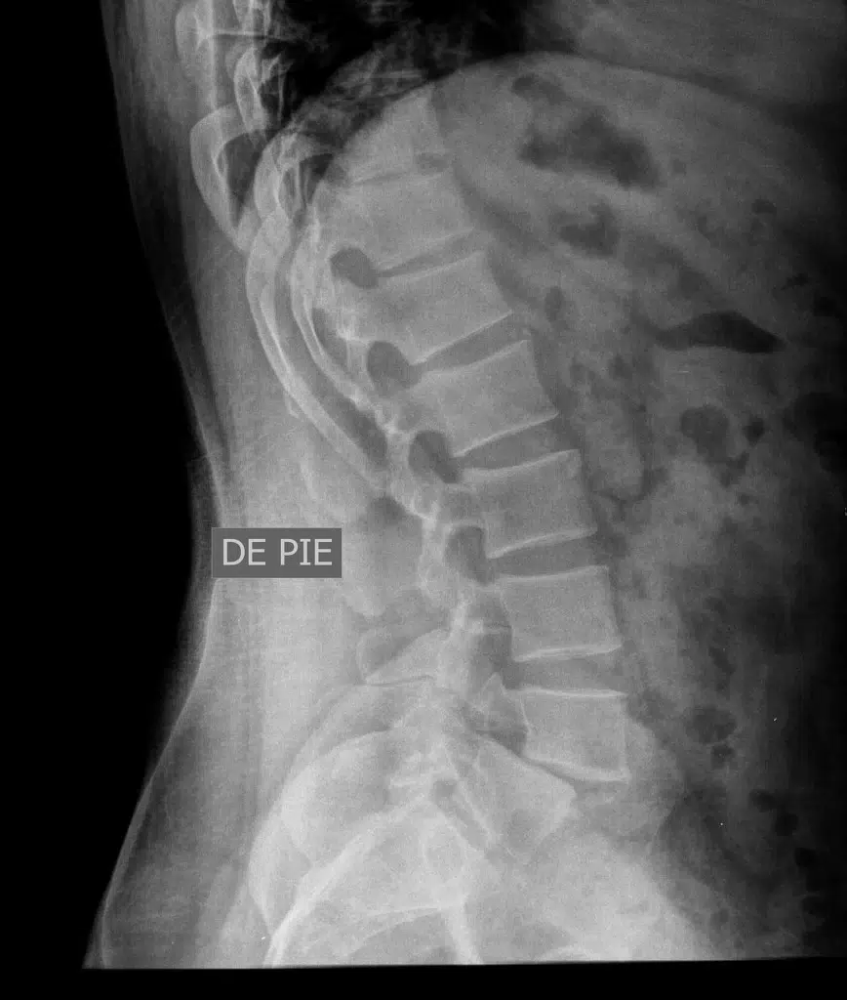

A espondilolistese é uma condição na coluna vertebral que ocorre quando uma vértebra desliza sobre a outra (geralmente a que está logo abaixo dela), perdendo o alinhamento correto.
Aqui está um resumo dos pontos principais para entender o quadro:
Imagine a coluna como uma pilha de blocos. Na espondilolistese, um desses blocos escorrega para frente (anterolistese) ou, mais raramente, para trás (retrolistese). O local mais comum de ocorrência é na região lombar.
Degenerativa: Causada pelo desgaste natural das articulações e discos com a idade (mais comum em idosos).
Ístmica: Devido a uma pequena fratura por estresse ou fraqueza em uma parte do osso chamada pars interarticularis (comum em atletas jovens).
Congênita: A pessoa já nasce com uma má formação na vértebra.
Traumática: Causada por acidentes ou impactos fortes.

Muitas pessoas não sentem nada, mas quando há sintomas, os mais comuns são:
Dor na região lombar que piora com movimento.
Sensação de rigidez muscular.
Dor que irradia para as pernas (ciático), caso o deslizamento pressione algum nervo.
Encurtamento dos músculos posteriores da coxa.
Na grande maioria dos casos, o tratamento é conservador, focado em:
Fisioterapia para fortalecimento do “core” (músculos abdominais e das costas).
Uso de analgésicos e anti-inflamatórios.
Mudanças de hábitos para evitar sobrecarga.
A cirurgia é reservada apenas para casos graves, onde há instabilidade neurológica ou dor intratável.